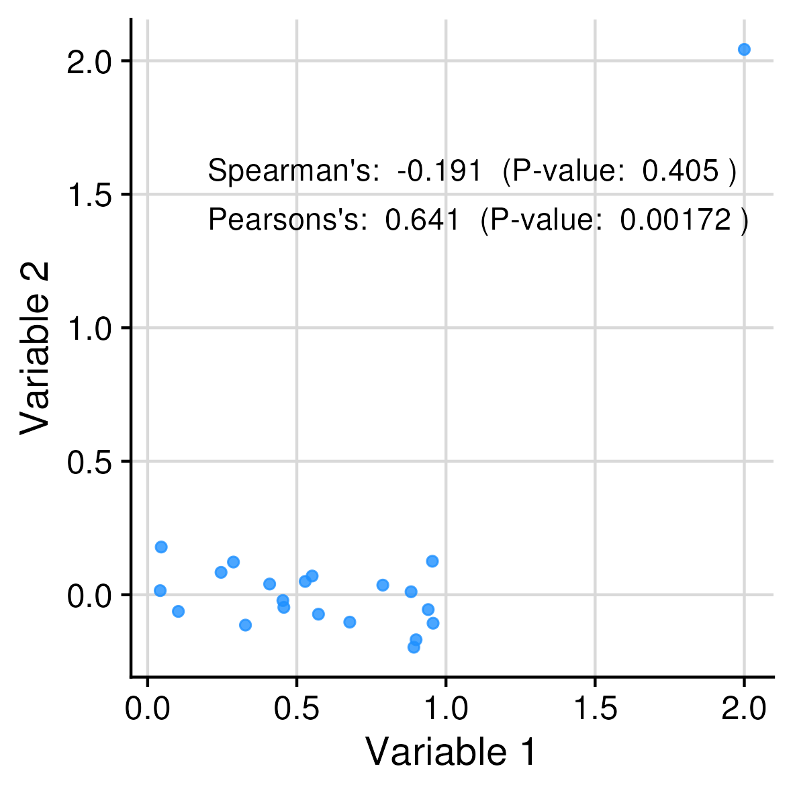

Pearson's product-moment correlation
data: data_tbl_bother$x and data_tbl_bother$y
t = 28.992, df = 98, p-value < 2.2e-16
alternative hypothesis: true correlation is not equal to 0
95 percent confidence interval:
0.9211609 0.9636474
sample estimates:
cor
0.9463529
We will also discuss how to extract the key information (estimate, p-value, etc.) and present it in a more readable format:
Correlation
Confidence interval
P-value
0.946
0.921 to 0.964
0
9.2 Understanding terms
9.2.1 Hypothesis testing
Purpose: detect differences
Examples:
Is the correlation between two variables different from zero?
Is the effect of a drug different from a placebo?
Primary tool for accounting for uncertainty: P-value
9.2.2 Estimation
Purpose: obtain best estimate for a given value from the data
Examples:
What is the correlation between two variables?
What is the effect of a drug?
Primary tool for accounting for uncertainty: confidence intervals
::: {.content-visible when-format=“html”}
Details
9.3 Relationship to the data
P-values measure the compatibility of the data with the null hypothesis
Confidence intervals provide a range of values that will contain the true value with a certain probability
For example, a 95% confidence interval [0.04, 0.5] says that 95% of the time, the true value will fall within the interval [0.04, 0.5]
9.3.0.1 Hypothesis testing
Null hypothesis (\(H_0\)): The default assumption
Typically, that there is no effect/difference
For example:
The correlation between two variables is zero
The effect of a drug is no different from a placebo
The null hypothesis is tested against the alternative hypothesis (\(H_1\))
For example:
The correlation between two variables is not zero
The effect of a drug is different from a placebo
P-value:
The probability of observing a value at least as extreme as what we did observe, given that the null hypothesis is true
:::
9.4 The primary challenge
The main difficulty in performing inference well lies in choosing the appropriate method for the task at hand. Inappropriate choices can be disastrous. Here, for example, two different correlation coefficients will give very different results, because one’s assumptions make it vulnerable to outliers:

9.5 Side-skipping the difficulties
The easiest way to avoid making erroneous assumptions is to not make any. This is the reason for the undying (and well-deserved) popularity of non-parametric methods, which make no assumptions about the underlying distribution of the data. Chief among them are:
Correlation:
The Spearman rank correlation
Hypothesis testing:
The Wilcoxon rank-sum test (Mann-Whitney/Mann-Whitney U/Wilcoxon-Mann-Whitney/…)
The Kruskal-Wallis test
Confidence intervals:
The bootstrap method
For this section, we will focus on hypothesis testing.
9.6 Spearman rank correlation
The Spearman rank correlation test is a non-parametric test that assesses the strength and direction of association between two ranked variables.
It is robust against outliers because it uses *ranks$ instead of the actual values of the variables.
Spearman's rank correlation rho
data: data_tbl_error$x and data_tbl_error$y
S = 1834, p-value = 0.4054
alternative hypothesis: true rho is not equal to 0
sample estimates:
rho
-0.1909091
To extract the correlation and p-value, we can use the following code:
It is both difficult and pointless to remember the exact syntax for extracting the correlation and p-value from the cor_test_obj_spearman object.
Of course, one could always ask ChatGPT. Here’s the answer it gave me.
But typically it is a bit quicker to just look what is in the object and extract it. When you get complicated output like when printing the cor_test_obj_spearman object, you can use the following code to see what is in the object:
Wilcoxon rank sum exact test
data: sample_tbl_mw$group_1 and sample_tbl_mw$group_2
W = 145, p-value = 0.1417
alternative hypothesis: true location shift is not equal to 0
The reason is that a lot of the “noise” (variability apart from the treatment) is removed when we use paired data. Sources of such variability include sex, age, income, etc.
9.9 Kruskal-Wallis test
The Kruskal-Wallis test is a non-parametric test that assesses whether three or more independent samples come from the same distribution.
It is a direct extension of the Mann-Whitney test to multiple groups.
9.9.1 Example
Suppose that we have add a third group to the previous example: